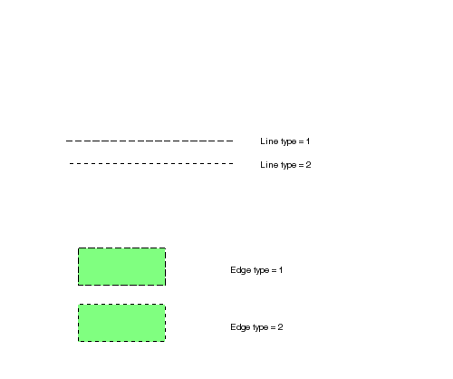

| Source image | Reference image |
|---|---|
 |
This test uses the ACI file to modify the standard line and edge type 1 which is Solid by default with a long dashed pattern. The image on the right shows the CGM rendered with line and edge type 1 replaced with a long dashed pattern.